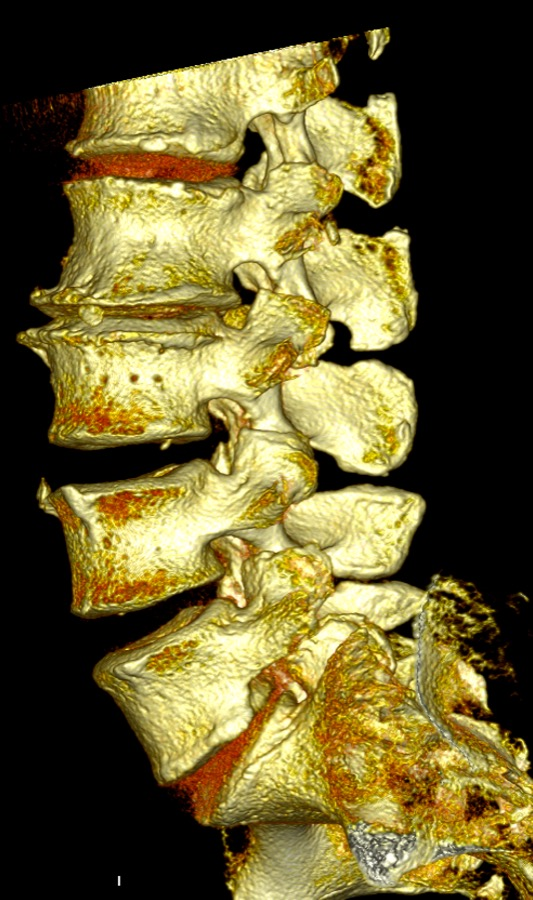
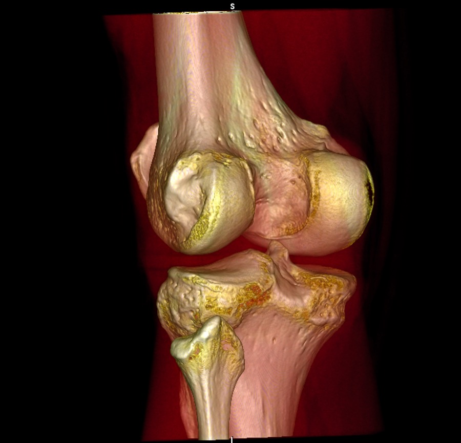
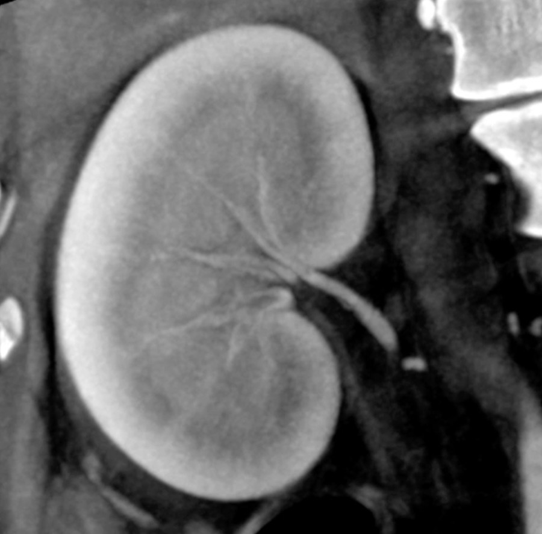
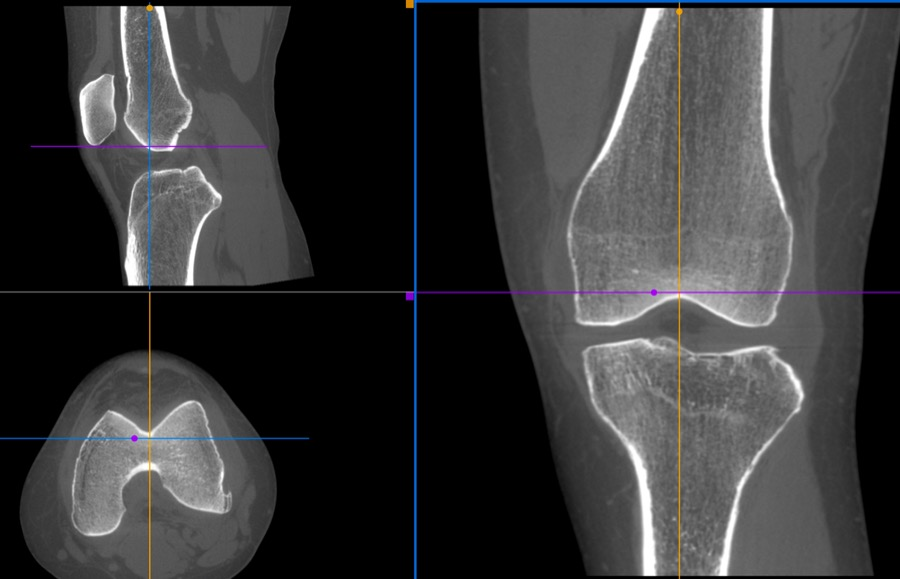

Ultra-high-density volumetric imaging with detail as fine as 0.1 mm — captured as real, non-interpolated data. No synthetic reconstruction. No artificial enhancement. What you see is what your body showed the scanner.
Call for details and scheduling · Mon–Fri 8 AM–6 PM · Same-day results available
Our Epica SeeFactor CT3™ uses High-Definition Volumetric Imaging (HDVI) — a fundamentally different way of capturing your anatomy.
The scan produces one gapless 3D volume of real measured data — voxels as fine as 0.1 mm, identical in all three dimensions. Detail that conventional CT reconstruction simply doesn't hold.
Most modern scanners interpolate — software fills the gaps between slices. HDVI doesn't. Every slice your radiologist reads is captured data, output as a single non-interpolated DICOM dataset. Nothing synthetic between you and the truth.
Because the voxels are truly isotropic, your volume can be re-sliced in any plane — axial, sagittal, coronal, or oblique — at full resolution, without rescanning you.
Proprietary beam filtration and pulsed imaging deliver 25–75% less radiation than conventional CT.*
Diagnostic 2D and 3D images of hard and soft tissue — fine bone structure, micro-fractures, lesions as small as 0.2 mm.
Detector and source sit outside the bore — a compact, open design that's faster and far less claustrophobic than tunnel scanners. Most studies take minutes.
Not stock photography — actual SeeFactor CT3 studies.




| LifeScan Full-Body — $1,499 | Typical MRI screening — ~$2,500 | |
|---|---|---|
| Data | 100% real, non-interpolated volume | Software-reconstructed images |
| Fine detail | As fine as 0.1 mm isotropic | ~1 mm typical |
| Time in scanner | Minutes per region — open design | ~60 min in a tunnel |
| Results | Same-day available | Days–weeks |
| Access | Direct — call and book | Referral/waitlist common |
A comprehensive head-to-pelvis structural survey on the SeeFactor CT3 — reviewed and reported by licensed clinicians, with same-day results available. Single regions from $450 · Total Clarity package $1,250.
📞 Call (681) 206-9434 for detailsNew Hope LifeScan · 2812 E. Imperial Hwy, Brea, CA 92821 · Mon–Fri 8 AM–6 PM